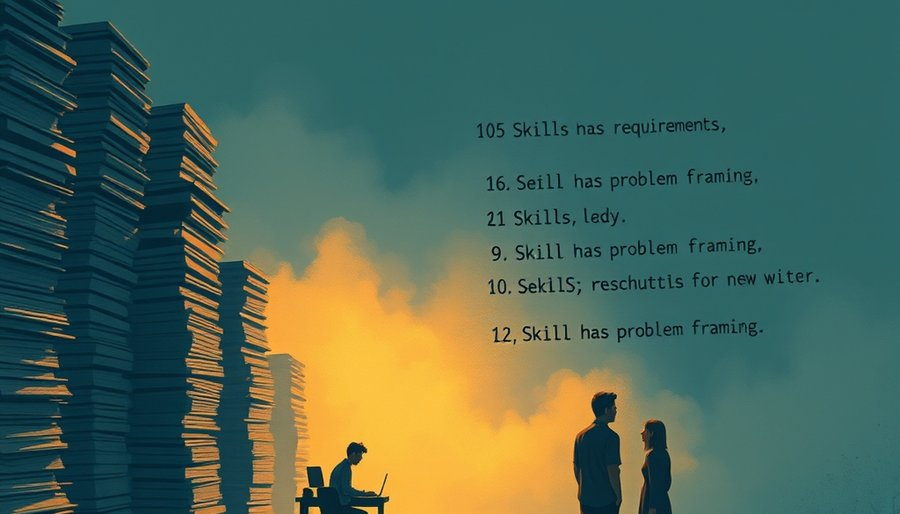

最自然的解释是，AI接管了重复性工作，人类则负责创造性、情感性的部分，二者形成互补。这个说法没有错，但它遗漏了一个关键变化：当AI能够以极低成本完成某类任务，这类任务所对应的技能就不再是稀缺资源。企业不会为不再稀缺的东西支付溢价。于是，那些曾经占据岗位描述大篇幅的“硬技能”要求开始退场，而剩下的、AI暂时无法复制的技能，突然变得更有价值。这不是简单的分工调整，而是一次技能定价权的转移。
过去，一个平面设计师的主要价值可能在于熟练操作Photoshop；今天，AI可以一键生成海报，企业对设计师的期待就从“会用工具”变成了“有审美判断力，能定义视觉风格”。工具技能贬值了，审美技能升值了。同样的逻辑正在写作、编程、数据分析等领域展开。在编程领域，GitHub Copilot能自动生成代码块，企业对初级程序员的要求就从“会写代码”变成“能理解业务逻辑并设计架构”。技能没有消失，只是价值排序被重新洗牌。
以客服行业为例。过去十年，一个合格的客服人员需要记住上百条标准应答、熟练操作工单系统。这些技能如今已被聊天机器人覆盖。但企业并没有停止招聘客服。他们只是换了一种要求：现在招的是“客户体验专家”，需要处理机器人无法解决的复杂投诉，安抚愤怒的用户，从对话中捕捉产品改进线索。这类岗位的薪资往往高于过去的普通客服，但数量更少，对人的判断力和情绪控制力要求更高。
同样的逻辑正在其他领域复制。当AI能写报告初稿，企业对员工的期待就从“会写报告”变成“能识别报告中的逻辑漏洞并修正”。法律行业也在经历类似变化：AI工具能在几秒内完成合同审查，找出风险条款，于是初级律师不再花大量时间做文档审阅，而是被要求直接参与谈判策略的制定。那些只会审合同的律师面临贬值，而能结合法律知识和商业洞察的律师变得更贵。
在一些前沿企业，甚至出现了全新的岗位：提示工程师、AI训练师。这些岗位的核心能力不是写代码，而是将模糊的人类需求翻译成机器能理解的指令，并在机器输出中识别偏差。这是一种前所未有的混合技能，它的溢价正来源于AI的普及。
这种机制并不适用于所有工作。在一些高度标准化且无需人类判断的领域，比如基础数据录入、简单的翻译校对，AI的替代可能是整体性的，岗位直接消失，没有留下“人类溢价”的空间。另外，即使是在那些留下溢价空间的领域，也不是所有人都能顺利迁移。一个只会标准应答的客服，不一定能自动成为客户体验专家。技能溢价转移的代价是，它拉大了劳动力内部的分化：能够驾驭AI并发挥人类独特能力的人会获得更高回报，而只有可自动化技能的人则面临薪资停滞甚至失业。
这种分化不仅发生在个人之间，也发生在企业之间。率先采用AI并重新设计岗位的公司可能获得更高效率，但也会裁掉大量中间层员工，导致内部文化冲突。历史上有过类似的转折：工业革命初期，手织工被动力织机取代，许多人陷入贫困，但同时也催生了工厂经理、机械师等新岗位。不同的是，AI的替代速度更快，波及面更广，留给个人调整的时间更短。

我们习惯用“AI会取代多少工作”来讨论未来，但这个数字本身会遮蔽真正重要的变化。72%的技能可被委托，不等于72%的岗位会消失。更可能发生的是，每个岗位的技能配比被改写，一部分技能贬值，另一部分升值。个人在劳动力市场中的位置，越来越取决于他拥有多少处于“升值区间”的技能。
回到开头那个招聘网站的变化：企业删掉“熟练掌握办公软件”，不是因为这项技能没用了，而是因为它已经便宜到不需要单独写出来。他们加上的那些要求，才是现在真正稀缺、值得支付高价的东西。对教育体系的冲击可能比对企业更大。当学校还在教学生如何写出标准答案时，市场已经在为“提出好问题”的能力开出溢价。这个错位不会很快消失，而它可能是未来十年最深刻的社会断层之一。
对个人而言，需要不断评估自己的技能组合，并愿意持续学习那些AI暂时无法复制的能力。但这也带来一个残酷的问题：当AI继续进步，今天那28%的稀缺技能未来也可能被侵蚀。唯一的护城河，可能是学习能力本身。
尾声
有一种风险值得留意：企业强调软技能，有时只是招聘话术的更新，实际工作中仍以硬技能考核为主。但趋势本身是真实的，因为当硬技能被AI平价化之后，企业最终必须重新定义什么是“合格员工”。这个过程会充满试错和泡沫，但方向已经清晰。
小汪老师的成长观察笔记